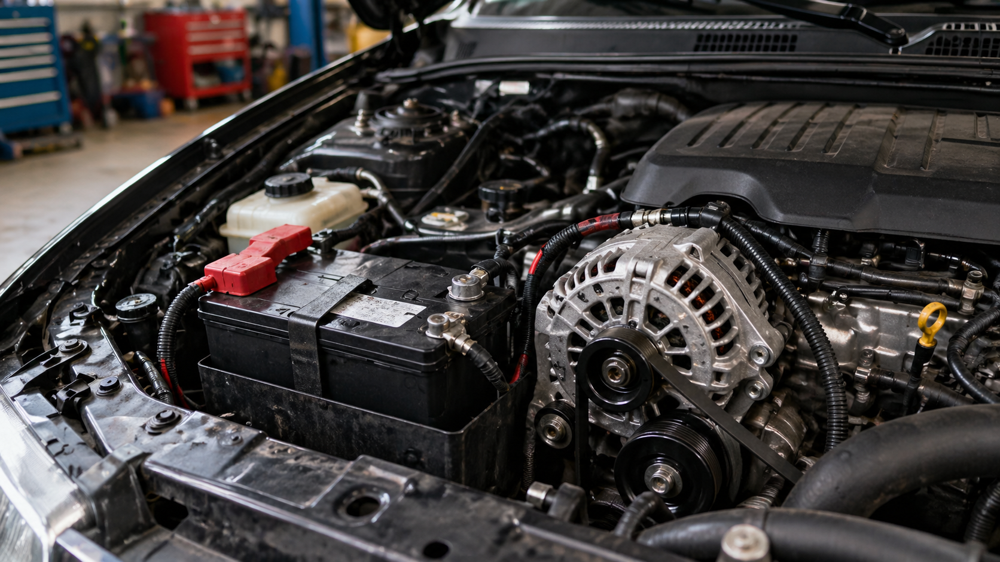
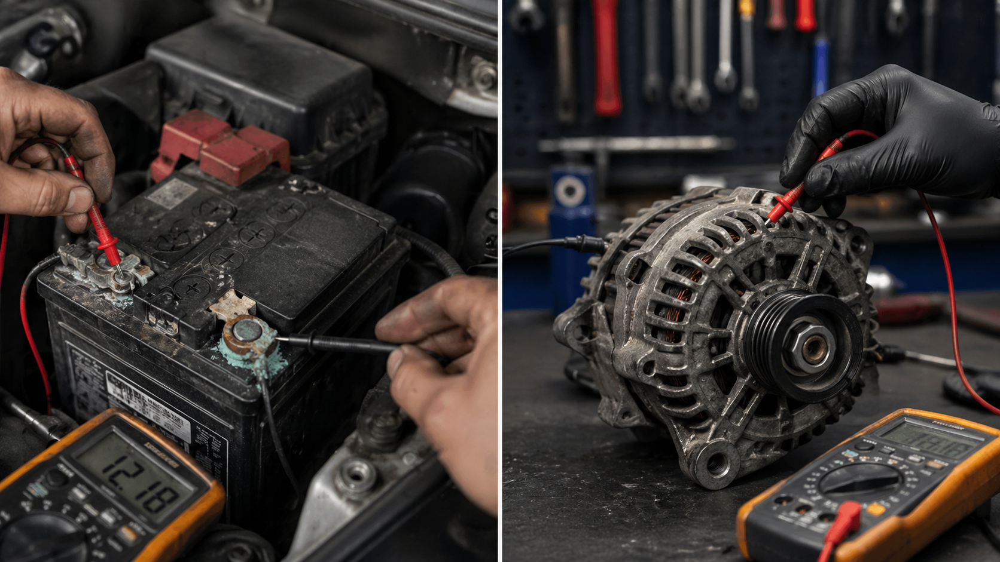
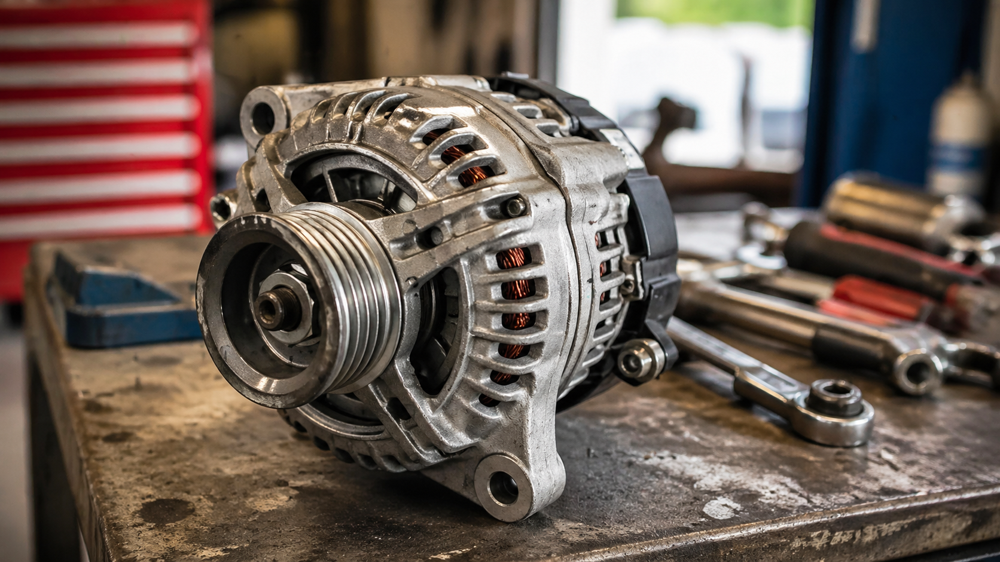
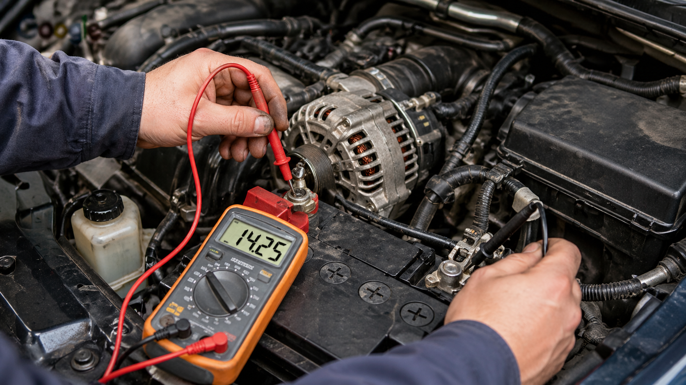
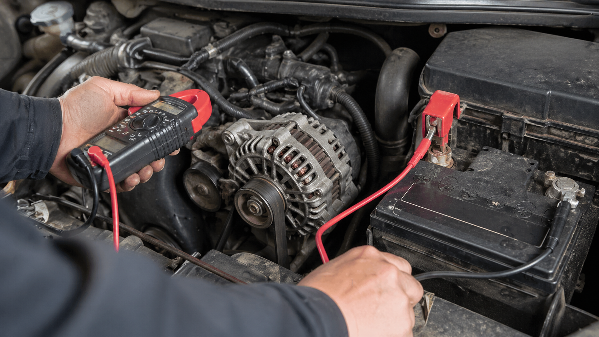
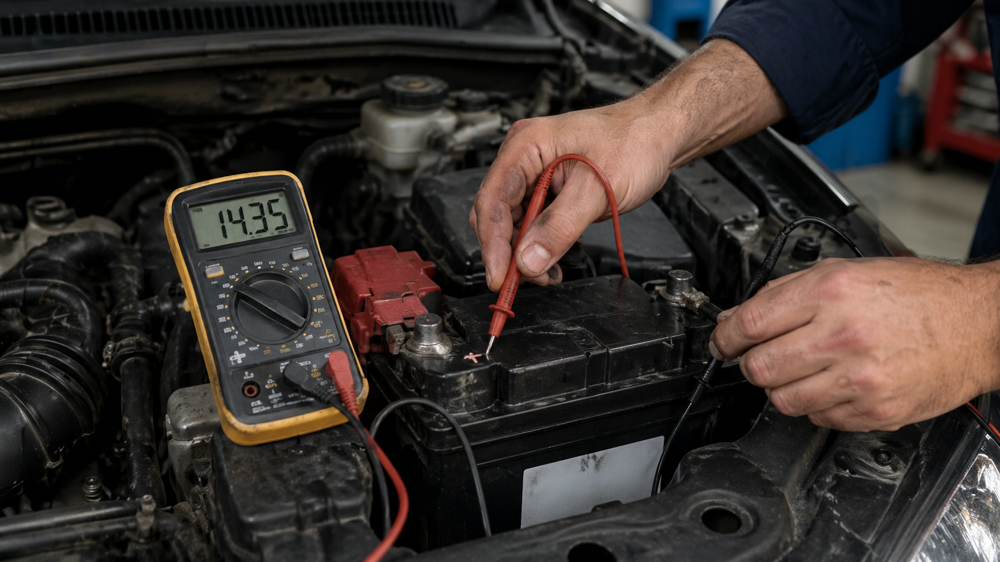

La batería y el alternador forman el núcleo del sistema eléctrico de un vehículo. Aunque muchas veces se mencionan juntos, no cumplen la misma función. La batería almacena energía química y la entrega como energía eléctrica para permitir el arranque, alimentar módulos y estabilizar el voltaje. El alternador, en cambio, convierte energía mecánica del motor en corriente eléctrica para mantener el sistema funcionando y recargar la batería mientras el motor está encendido.
Por eso, cuando un vehículo no enciende, se apaga, muestra el testigo de batería en el tablero o presenta fallas eléctricas, no siempre es evidente si el problema está en la batería o alternador. En esta guía se explica cómo saber si falla el alternador o la batería, cómo probar el sistema con multímetro, qué pasa cuando falla el alternador, cómo suena un alternador dañado, por qué un alternador no carga batería pero funciona aparentemente, y qué revisar antes de reemplazar piezas costosas.

Contenido del artículo
- Capítulo 1: Función de la batería y el alternador
- Capítulo 2: Cómo saber si falla el alternador o la batería
- Capítulo 3: El alternador carga la batería: cómo funciona el sistema
- Capítulo 4: Prueba con multímetro y valores de voltaje
- Capítulo 5: Alternador no carga batería pero funciona
- Capítulo 6: Testigo de batería, ruidos y síntomas de alternador dañado
- Capítulo 7: Bornes sulfatados, cables y caída de tensión
- Capítulo 8: Precio, mantenimiento y conclusión técnica
Capítulo 1: Función de la Batería y el Alternador
La batería automotriz es una reserva de energía. Su trabajo principal es entregar una corriente elevada durante pocos segundos para accionar el motor de arranque. Una vez que el motor enciende, la demanda eléctrica principal pasa a depender del alternador. Esto significa que la batería es esencial para arrancar, pero no debería ser la fuente principal de energía mientras el vehículo ya está funcionando.
El alternador de auto trabaja acoplado al motor mediante una correa. Cuando el motor gira, la polea del alternador hace girar su rotor interno. Ese movimiento genera corriente eléctrica mediante inducción electromagnética. Luego, el rectificador convierte la corriente alterna generada internamente en corriente continua, y el regulador de voltaje controla la salida para evitar sobrecarga o baja carga.
En condiciones normales, el alternador carga la batería y alimenta consumidores como luces, ventilador, radio, computadora del motor, bomba de combustible, módulos electrónicos, sensores, limpiaparabrisas y sistema de climatización. Si el alternador deja de cargar, el vehículo comienza a consumir la energía almacenada en la batería hasta agotarla.
Capítulo 2: Cómo Saber si Falla el Alternador o la Batería
La pregunta “cómo saber si falla el alternador o la batería” es una de las más comunes en diagnóstico eléctrico automotriz. Ambos problemas pueden parecer similares porque producen arranque difícil, luces débiles, fallos electrónicos o vehículo que no enciende. Sin embargo, los síntomas tienen diferencias importantes.
Una batería defectuosa suele manifestarse con dificultad al arrancar, clic del motor de arranque, luces débiles antes de encender el motor o pérdida de capacidad después de estar estacionado. Un alternador defectuoso puede permitir que el vehículo arranque si la batería tiene carga, pero luego no mantiene el voltaje correcto mientras el motor funciona. En ese caso, el auto puede apagarse después de circular o mostrar testigos eléctricos.
Batería o alternador: síntomas comparados
Si el vehículo no arranca después de estar varias horas estacionado, pero funciona bien una vez encendido, la batería puede estar débil o existir consumo parásito. Si arranca con ayuda externa, pero se apaga al poco tiempo o vuelve a descargar la batería durante la marcha, el alternador o el sistema de carga deben revisarse.
También puede ocurrir que ambos estén afectados. Una batería vieja puede exigir demasiado al alternador, y un alternador que carga mal puede deteriorar prematuramente una batería nueva. Por eso, reemplazar solo una pieza sin medir voltaje y corriente puede llevar a gastos innecesarios.

Capítulo 3: El Alternador Carga la Batería: Cómo Funciona el Sistema
La frase “el alternador carga la batería” es correcta, pero incompleta. El alternador no solo carga la batería: también alimenta el sistema eléctrico del vehículo cuando el motor está encendido. La batería actúa como reserva y estabilizador, mientras que el alternador sostiene la demanda eléctrica continua.
El proceso comienza cuando la correa mueve la polea del alternador. El rotor genera un campo magnético y el estator produce corriente alterna. Luego, los diodos rectificadores convierten esa energía en corriente continua. El regulador ajusta la salida para mantener un rango de voltaje adecuado, normalmente alrededor de 13.8 a 14.7 voltios en muchos vehículos, aunque puede variar según tecnología, temperatura y estrategia de carga inteligente.
Partes principales del alternador
Un alternador de auto contiene rotor, estator, puente rectificador, regulador de voltaje, escobillas o carbones en algunos diseños, rodamientos, polea, carcasa y ventilación. Si una de estas partes falla, la carga puede ser baja, intermitente o inexistente.
Los diodos dañados pueden generar rizado eléctrico o carga irregular. Los rodamientos defectuosos pueden producir ruido. Las escobillas desgastadas pueden causar pérdida de excitación. El regulador defectuoso puede provocar sobrecarga o baja carga. Por eso, no todo problema de alternador se soluciona cambiando la pieza completa, aunque en muchos talleres se reemplaza como conjunto por practicidad.

Capítulo 4: Prueba con Multímetro y Valores de Voltaje
Para saber si mi alternador está fallando con multímetro, se debe medir el voltaje en bornes de batería en varias condiciones: motor apagado, durante arranque y con motor encendido. Estas mediciones no sustituyen una prueba de carga profesional, pero permiten una orientación bastante útil.
Cómo medir la batería
Con el motor apagado y después de reposo, una batería en buen estado suele estar cerca de 12.6 voltios. Si mide alrededor de 12.2 voltios, puede estar parcialmente descargada. Si está cerca de 12.0 voltios o menos, la carga es baja. Durante el arranque, el voltaje no debería caer excesivamente; una caída muy fuerte puede indicar batería débil, motor de arranque con consumo alto o conexiones deficientes.
Esta prueba ayuda a diferenciar si el problema inicial es la batería, pero no confirma por completo su capacidad. Una batería puede mostrar buen voltaje en vacío y fallar bajo carga. Por eso, una prueba con tester de batería o carga controlada puede ser necesaria.

Cómo saber si el alternador carga o no
Para saber si el alternador carga o no, se mide voltaje con el motor encendido. En muchos vehículos, un valor aproximado entre 13.8 y 14.7 voltios indica que existe carga. Si el voltaje permanece cerca de 12.4 voltios o baja progresivamente, el alternador podría no estar cargando. Si supera valores excesivos, puede existir falla del regulador.
También se debe probar con consumidores encendidos: luces, desempañador, ventilador y aire acondicionado. Si al activar cargas el voltaje cae demasiado y no se recupera, el sistema puede tener alternador débil, correa floja, mala masa, cable principal con resistencia o batería defectuosa.

4.1 Cómo saber si el alternador carga sin multímetro
Muchas personas buscan cómo saber si el alternador carga sin multímetro. Aunque existen señales orientativas, no son tan confiables como una medición. Algunas pistas son luces que bajan de intensidad, testigo de batería encendido, accesorios que fallan, dirección eléctrica pesada, olor a quemado, chillido de correa o vehículo que se apaga después de consumir la carga de la batería.
Aun así, diagnosticar sin multímetro tiene limitaciones. El sistema eléctrico moderno puede compensar fallas durante un tiempo y luego fallar de repente. Lo recomendable es medir voltaje o acudir a una prueba profesional si aparecen síntomas.
Capítulo 5: Alternador no Carga Batería pero Funciona
La frase “alternador no carga batería pero funciona” describe una situación común: el alternador gira, la correa lo mueve y no hay ruido evidente, pero el voltaje de carga no llega correctamente a la batería. En ese caso, no basta con mirar si la polea está girando. Hay que revisar el circuito completo.
Las causas pueden incluir regulador dañado, puente rectificador defectuoso, carbones gastados, cable principal flojo, fusible principal abierto, mala conexión a masa, borne sulfatado, correa patinando, polea libre dañada o señal de excitación ausente. En algunos vehículos modernos, la carga también puede ser controlada por la ECU, por lo que una falla de comunicación o sensor puede alterar la estrategia de carga.
Inspección del alternador instalado
Antes de reemplazar el alternador, conviene revisar correa, tensión, polea, conectores, cable positivo grueso, masa del motor y fusibles. Un cable con resistencia interna puede impedir que la corriente llegue correctamente a la batería aunque el alternador esté generando.
También puede ocurrir que el alternador cargue en frío y falle en caliente. Esta falla intermitente suele ser más difícil de detectar y requiere medir el sistema cuando el problema aparece realmente.
Capítulo 6: Testigo de Batería, Ruidos y Síntomas de Alternador Dañado
El testigo de batería en el tablero no siempre significa que la batería esté dañada. En muchos casos indica problema en el sistema de carga. Si se enciende con el motor en marcha, puede señalar que el alternador no está generando voltaje suficiente, que hay falla de correa, problema de regulador, mal contacto o una anomalía eléctrica.
Qué pasa cuando falla el alternador
Cuando falla el alternador, el vehículo comienza a alimentarse solo de la batería. Al principio puede parecer normal, pero a medida que baja el voltaje aparecen síntomas: luces débiles, pantalla apagándose, fallos en sensores, dirección asistida eléctrica pesada, radio intermitente, testigos múltiples, pérdida de potencia y finalmente apagado del motor.
Si el alternador deja de cargar por completo durante la marcha, el tiempo que el vehículo puede seguir funcionando depende del estado de la batería y de la cantidad de consumidores eléctricos activos. Con luces, aire acondicionado y accesorios encendidos, la descarga será mucho más rápida.
6.1 Cómo suena un alternador dañado
La búsqueda “cómo suena un alternador dañado” suele relacionarse con ruidos de rodamientos, chillidos, zumbidos o rozamientos. Un alternador con rodamientos desgastados puede producir un ruido áspero que aumenta con las revoluciones. Una correa patinando puede generar un chillido agudo al arrancar o al encender consumidores eléctricos. Una polea libre defectuosa puede provocar vibración o golpeteo en la correa.
No todo ruido en la zona del alternador proviene del alternador. También pueden sonar tensores, poleas locas, bomba de agua, compresor de aire acondicionado o correa deteriorada. Por eso, el diagnóstico auditivo debe confirmarse con inspección mecánica.
Capítulo 7: Bornes Sulfatados, Cables y Caída de Tensión
Una causa muy común de fallas eléctricas son los bornes sulfatados o conexiones flojas. La corrosión en los terminales aumenta la resistencia eléctrica. Esto puede provocar caída de tensión, dificultad de arranque, carga deficiente y lecturas engañosas. A veces la batería y el alternador están en buen estado, pero la corriente no circula correctamente por culpa de una mala conexión.
Sulfato, masa y cable positivo
El sulfato aparece como una acumulación blanquecina, verdosa o azulada alrededor de los bornes. Debe limpiarse con cuidado, desconectando correctamente el sistema y evitando cortocircuitos. Después de limpiar, los terminales deben quedar firmes y bien ajustados.
La caída de tensión también puede producirse en el cable de masa entre batería, carrocería y motor. Una mala masa puede causar fallas extrañas: arranque débil, luces intermitentes, sensores erráticos o carga irregular. Por eso, el diagnóstico debe incluir cable positivo y negativo, no solo batería y alternador.

7.1 Cómo saber si falla el alternador o la batería en moto
En motos, el principio es similar, pero el sistema puede usar alternador, estator y regulador/rectificador según el diseño. Si una moto descarga la batería, no siempre significa batería dañada. Puede existir falla del estator, regulador, rectificador, conectores quemados o consumo parásito. La prueba con multímetro también se realiza midiendo voltaje en batería con motor apagado y encendido, pero los valores y procedimientos pueden variar según fabricante.
Capítulo 8: Precio, Mantenimiento y Conclusión Técnica
La búsqueda “alternador precio” depende del modelo del vehículo, marca de repuesto, si es nuevo o reconstruido, disponibilidad, mano de obra y complejidad de instalación. En algunos autos el alternador está accesible; en otros, requiere desmontar componentes adicionales. Por eso, el costo final no depende solo de la pieza.
Antes de comprar un alternador, conviene confirmar que realmente está fallando. Si el problema está en batería, cableado, fusible principal, masa o correa, reemplazar el alternador no resolverá la falla. De la misma manera, si el alternador carga mal, instalar una batería nueva solo dará una solución temporal.
8.1 Mantenimiento preventivo recomendado
- Revisar voltaje de batería: medir en reposo y durante arranque.
- Medir carga del alternador: comprobar voltaje con motor encendido y consumidores activados.
- Inspeccionar bornes: limpiar sulfato y asegurar terminales firmes.
- Revisar correa: buscar grietas, patinamiento, tensión incorrecta o poleas ruidosas.
- Verificar masas: comprobar conexión entre batería, carrocería y motor.
- Atender testigos: no ignorar el símbolo de batería en tablero con el motor funcionando.
- Escuchar ruidos: zumbidos, chillidos o rodamientos ásperos pueden indicar falla mecánica.
En conclusión, batería y alternador deben diagnosticarse como un sistema. La batería almacena energía, el alternador la repone y el cableado permite que esa energía circule. Si una parte falla, todo el sistema eléctrico se vuelve inestable. La forma correcta de saber si falla el alternador o la batería es medir, inspeccionar y confirmar antes de reemplazar.